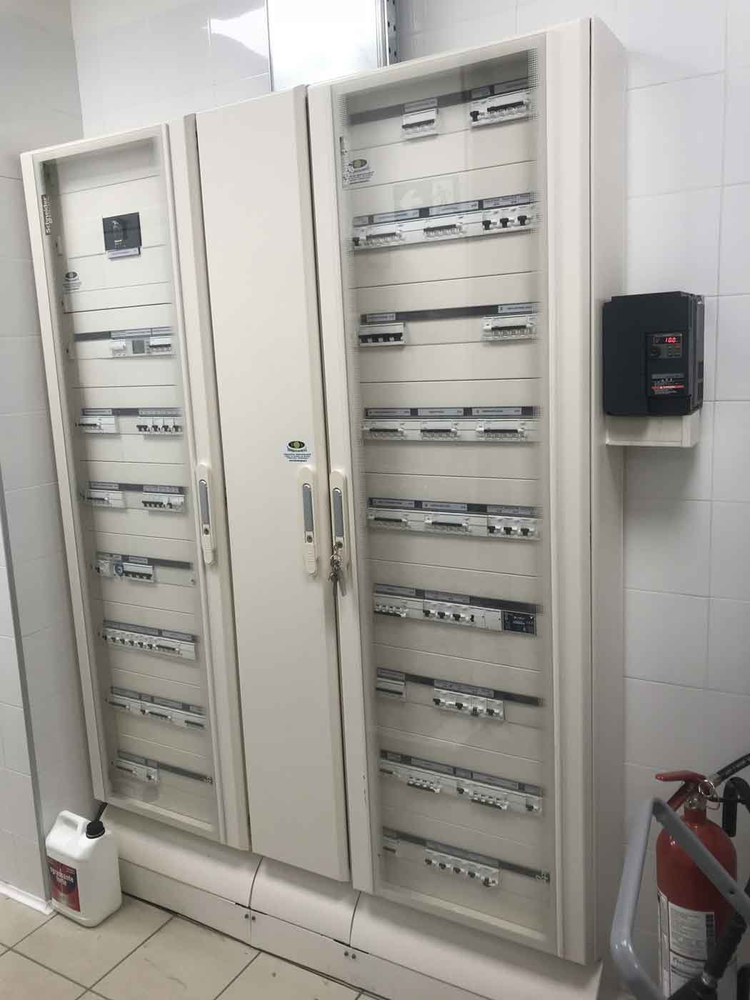
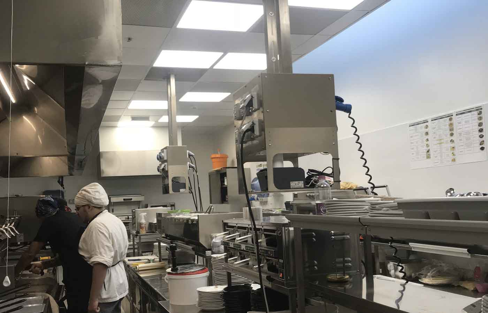

I Nostri Lavori
B-Live09123 Cagliari, Cagliari, SardegnaRealizzazione impianto di illuminazione e audio. |

|
|
|
Casa del Grano09067 Elmas, Cagliari, SardegnaRealizzazione impianto elettrico, rete dati, videosorveglianza e impianto allarme. |
Shi's Roma00167 Valle Aurelia, Roma, LazioRealizzazione impianti elettrici, dati e diffusione sonora. |
 |

|
Shi's c.c. Le Vele Millenium09044 Quartucciu, Cagliari, SardegnaRealizzazione impianti elettrici. |
Old Wild West65015 Montesilvano, Pescara, AbruzzoRealizzazione impianti elettrici, dati e diffusione sonora. |
 |

|
Antuofermo Sportswear09028 Sestu, Cagliari, SardegnaRealizzazione impianti di illuminazione, forza motrice, telesorveglianza, antintrusione, rilevazione fumi, cabine di trasformazione. Prodotti utilizzati: illuminazione (Zumtobel - Quattrobi); quadri (Schneider - Bticino). |
Policlinico Universitario di Cagliari, Blocco Q09042 Monserrato, Cagliari, SardegnaRealizzazione impianti elettrici, impianti rivelazione fumi, impianti dati, impianti telefonici, impianti diffuione sonora. Interventi effettuati per sei sale parto-travaglio, sala operatoria, terapia intensiva, subintensiva neonatale e neuropsichiatria infantile. |
|

|
Stadio Is Arenas09045 Quartu Sant'Elena, Cagliari, SardegnaRealizzazione impianto di illuminazione su torri faro e allestimento nuovi impianti elettrici. |
Discoteca Tsunami09010 Santa Margherita di Pula, Cagliari, SardegnaRealizzazione impianto luci, audio videosorveglianza, allarme e console djay presso il locale composto da n. 1 pista invernale, n. 2 estive ed una sala convegni. Capacità 4500 posti. Prodotti utilizzati: illuminazione (Zumtobel – Bega – Norlight – Viabizzuno); quadri (Bticino); componentistica sala (Martin). |